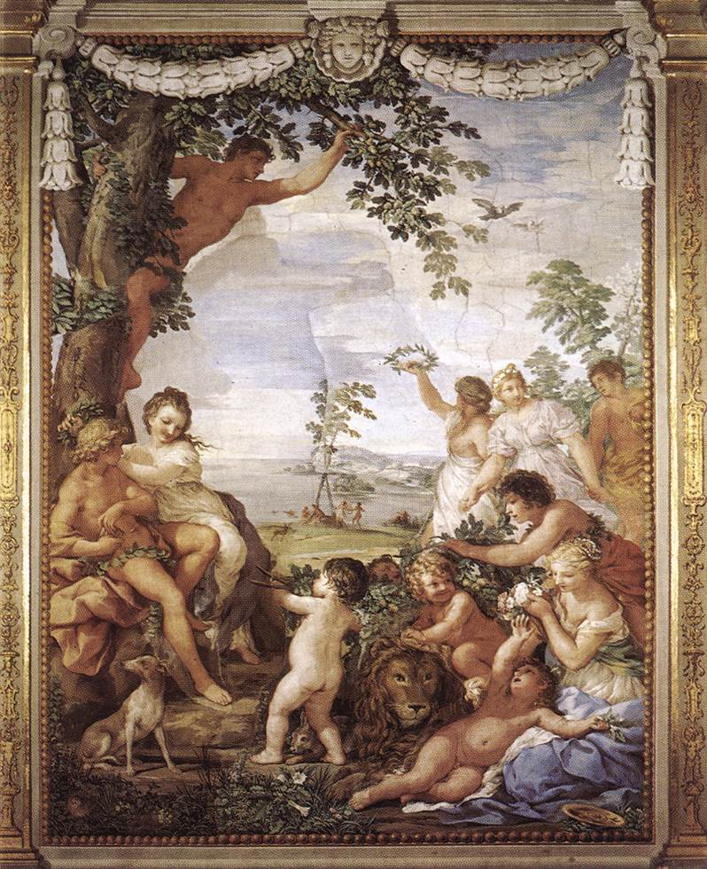
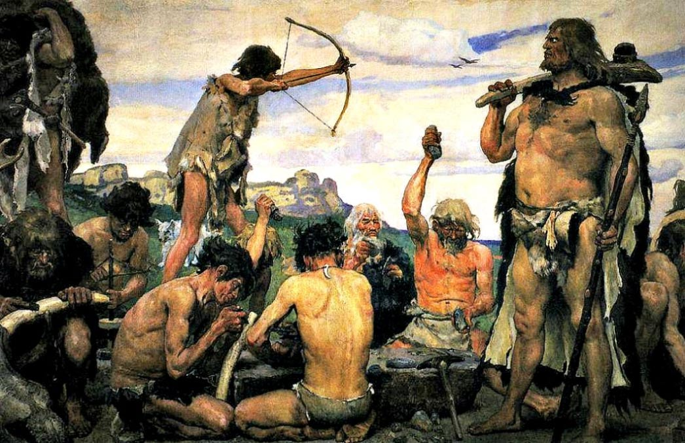
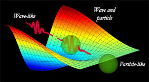

Daemon.life is a web site for the development and intentional ownership of one's personal technolog. The main idea is that when someone uses algorithms, they become owned by that user and should contain the personality of that user.
Yes. It is about using first principles to develop one's own algorithms?
There are many bugs in peoples algorithms.
Why does a person one second tell themselves they want to lose weight and then the next second go and take a bite out of a fatty hamburger?
It is because there is a contradiction or a bug in their algorithms that is allowed to stay, because the algorithm isn't killing the person or interupting software flow.
Why does a person say in one breath that they love animals and then use bags and shoes made of dead animal skins like leather, when they could very well use canvas?
It is because there is a contradiction or a bug in their algorithms that is allowed to stay, because the algorithm isn't killing the person or interupting software flow.
Absolutely, they must.
Daemons, right now, are for the dedicated.
Daemons are for those who are interested in letting the algorithms guide their life
For that reason, they must understand algorithms and be able to write algorithms of their own
They are written in whatever language the user most enjoys using!
They are the users code. The user may choos to utilize other people's code. They however will spend time to analyize that code before using it.
If by becoming cybernetic organisms we are "awakening the daemon" then I think it best that I have control over my own personal one. I don't want to live with Jeff Bezos's daemon nor with Sergey Brin's daemon nor with Steve Job's daemon. I want control over my own technological personality.
Right now, my daemon is pretty standard. It is nothing more than my laptop and android phone running standard apps. I just started this site.
Right now I am just gathering my thoughts. I do want to sell open source products. For products that are non-phsyical, I am considering a donation based revenue scheme.
Right now, I am considering producing
A deamon is a term used in greek mythology to represent the souls of men during the Golden Age of primordial peace, harmony, stability, and prosperity.
As the mythology goes, during this age, people did not have to work to feed themselves, for the earth provided food in abundance. This age represents the hunter gatherer period of human history.
The Golden Age has other mythological representation in other cultures, such as the Garden of Eden
During the time period represented by these mythologies, humans began to learn and use language. At first, humans only gave names to physical objects in their environment. As the myth of Genesis states: "Adam named the animals"

It isn't really obvious to anything but a a human that animals are even a thing. From the perspective of a single photon, an animal is just a cloud of atoms that the photon can be absorbed by.
From the perspective of a rabbit, all animals are either other rabbits or preditors to run away from.
...and to a large bird of prey, animals look like this..
Just kidding, that is what a computer sees....
Of course, from the Universal perspective, an animal is all that it is. The Universal perspective is sum total of quantum interactions that happen in the entire universe plus the emergent properties and laws that arise by combining these quantum interactions.
The modern understanding of the Universal perspective has taken a long time for humanity to develop. It is a very abstract concept that requires the discovery/invention of mathematics to properly study. Ancient humans may have not possesed the scientific method and math, but they did know a lot about other humans beings. So they began using what they knew as a metaphore for what they didn't fully understand... thus they created this...
and these...
They then began creating personified daemon spirits to represent the emergent and invisible properties that govern individual humans and to represent aspects of a person that the person might not even know about themselves. One's technology will soon represent aspects of a person they will fully not understand (or even control) themselves, hence the name daemon.